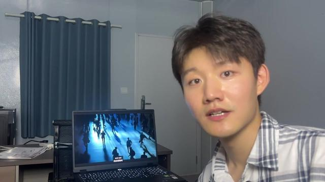
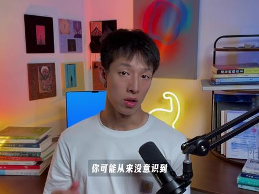

普通人怎样在6-12个月内改变自己
来源：抖音 归档日期：2026-09-12 抓取状态：成功 原文字符：25369｜配图：28 张
摘要速览
- 分享普通人如何在 6–12 个月内实现个人成长和改变。
- 核心是把大目标拆成可在半年到一年内完成的具体动作。
- 待补充原文：抓取时抖音分享页未加载出视频正文，正文内容需后续补充。
核心内容
待补充原文。
（抓取说明：抖音分享链接可跳转至视频页，但页面正文由客户端动态渲染，未能提取到视频描述与话题标签，仅取得视频 ID 7681977373776799089。表格中的摘要为收件箱录入时的概括：齐天大晟分享普通人如何在 6-12 个月内实现个人成长和改变。）
可执行启发
- 待原文补充后整理具体方法步骤；当前可先按"6–12 个月为周期、拆解为月度可执行动作"的框架自拟计划。
归属：[[02-输入/按主题/认知与思维/_index|认知与思维]]
我的想法
（待补充）
原文沉淀
目录
- 2万
- 8万
- 普通人怎样在6-12个月内改变自己 #个人成长 #认知思维 #自我成长
- 推荐视频
- 6万穿秋一
- 9万大英雄江锵锵
- 什么是一个好工作？自由职业者的感受是什么 #自由职业者 #vlog
- 3万张骏
- 3万范不慌
- 3万你隔壁阿柴
- 提升自己基础最为核心 #认知 #真理 #思维 #戒色
- 4万MPWF1988
- 5万安航An
- 你知道男人是怎么引导女人出车九的 #情感心理学 #行为心理学 #认知思维#情感
- 0万知音
- 『4 个模型』帮你建立自己的表达逻辑。 #逻辑 #表达结构 #表达模板
- 4万财富认知差
- 如何利用AI，把你兴趣爱好变成收入#自媒体#个人ip#赚钱#认知#破而后立
- 干货中的干货！18条肮脏至极的处事技巧！ #人性 #天道 #规律#认知#强势文化
- 0万扶摇乘风
- 5万执戟郎
- 5万现在是昊宽
- 两个顶级心态，告别精神内耗 #个人成长 #人生感悟 #精神内耗 #人间清醒
- 9万芒果猴思维破局
- 下一个风口：自媒体+养生（附 5 个玩法）
- 0万盈子（9月空中课）
- 不上班怎么舒服地养活自己？我8年不上班只工作的的三个心得
- 提升自己基础最为核心 #认知 #真理 #思维 #戒色
- 建立表达系统｜第 0 期 其实提升表达能力的最优方案
读屏标签已关闭


下载抖音精选
2026 © 抖音
[
京公网安备11010802050006号](https://beian.mps.gov.cn/)
[
电子营业执照](https://zzlz.gsxt.gov.cn/businessCheck/verifKey.do)
信息网络传播视听节目许可证 0126733
广播电视节目制作经营许可证 （京）字第11313号
增值电信业务经营许可证 京B2-20170846
网络文化经营许可证 京网文〔2025〕0181-061号
互联网宗教信息服务许可证 京（2025）0000017
药品医疗器械网络信息服务备案 （京）网药械信息备字（2023）第00570号
互联网新闻信息服务许可证 11220230001

违法和不良信息举报 400-140-2108 feedback@douyin.com
算法推荐专项举报 sfjubao@bytedance.com
体育饭圈专项举报 tyfq@bytedance.com
dankoe六个月改变人生视频
充钻石
壁纸
通知
**
消息
投稿
未登录
登录后即可观看喜欢、收藏作品
我的喜欢
我的收藏
观看历史
稍后再看
我的作品
我的预约
我的订单

暂停
00:07 / 07:54 直播
章节要点：共6个
登录后可发布弹幕
发送
00:00
引言
进入全屏H
网页全屏Y
0
截图
小窗模式U
字幕
- 不开启
稍后再看L
倍速
登录后即可切换倍速立即登录
高清 1080P登录即享
高清 720P
智能
智能
清屏
清屏J
连播
自动连播K
2万
496
8万
6694
听抖音
中美的社会制度，教育环境，商业准则，生存哲学完全不一样
5
举报
**
重播

3s 后播放
不上班的第三年，我发现限制我的不是工资，是这3个[思维盲区] #思维盲区 #时间管理 #打工思维 #离职创业 #独立思考
3s 后播放下一个视频
3s 后循环播放当前视频
点击按住可拖动视频
章节要点
普通人如何在6-12个月内改变自己？首先，明确自己不想要的生活，即反向愿景，从而看清真正想要的未来。其次，制定具体的计划，明确每天和每周的任务。然后，从那些不属于自己未来生活的事物中消失，重新分配注意力。最后，养成重复基本功的习惯，逐步提升能力。真正的改变始于看清自己不想成为的人，然后朝着相反的方向努力。
00:00
引言
00:22
反向愿景
通过思考自己不想要的生活，明确真正想要的未来。
02:44
制定计划
制定具体的计划，明确每天、每周的任务。
04:06
消失
从阻碍自己的事物中消失，重新分配注意力。
05:13
重复基本功
养成重复基本功的习惯，逐步提升能力。
06:46
结语
看清自己不想成为的人，为想要的生活建立秩序。
普通人怎样在6-12个月内改变自己 #个人成长 #认知思维 #自我成长
2万
496
8万
6694
举报
发布时间：2026-09-05 17:15
齐天大晟
粉丝2008获赞6.5万
推荐视频
- ![不上班的第三年，我发现限制我的不是工资，是这3个[思维盲区] #思维盲区 #时间管理 #打工思维 #离职创业 #独立思考](../../_assets/20260912-普通人怎样在6-12个月内改变自己/img-008-3f0362c7.jpeg)
10:50
播放中
不上班的第三年，我发现限制我的不是工资，是这3个[思维盲区] #思维盲区 #时间管理 #打工思维 #离职创业 #独立思考
6万穿秋一
- ［图：女孩子可以不用，但一定要懂的挑拨离间套路 #纯姐和Alex #女性成长 #人际关系 #个人成长 #青年创作者成长计划］
07:11
播放中
女孩子可以不用，但一定要懂的挑拨离间套路 #纯姐和Alex #女性成长 #人际关系 #个人成长 #青年创作者成长计划
30.5万纯姐和Alex
- ［图：今年起势，明年必起飞的新赛道：FDE。 #AI #创业 #职场 #青年创作者成长计划 #抖音前沿科技首发计划］
04:15
播放中
今年起势，明年必起飞的新赛道：FDE。 #AI #创业 #职场 #青年创作者成长计划 #抖音前沿科技首发计划
9万大英雄江锵锵
- ［图：什么是一个好工作？自由职业者的感受是什么 #自由职业者 #vlog］
06:08
播放中
什么是一个好工作？自由职业者的感受是什么 #自由职业者 #vlog
3万张骏
- ［图：如何保持精力充沛的高能量状态？5个『提升精力』的方法！ #高精力 #内耗 #认知 #提升自己 #个人成长］
07:32
播放中
如何保持精力充沛的高能量状态？5个『提升精力』的方法！ #高精力 #内耗 #认知 #提升自己 #个人成长
3万范不慌
- 
03:59
播放中
不上班怎么舒服地养活自己？我8年不上班只工作的的三个心得#自媒体 #自由职业 #职场 #自媒体创业 #上班族
3万你隔壁阿柴
- ［图：提升自己基础最为核心 #认知 #真理 #思维 #戒色］
07:04
播放中
提升自己基础最为核心 #认知 #真理 #思维 #戒色
4万MPWF1988
- ［图：人生观的 『六种类型』，你更倾向于哪种人生观？ #人生观 #摆脱迷茫 #奥德赛时期 #自我认知和定位 #三观］
11:01
播放中
人生观的 『六种类型』，你更倾向于哪种人生观？ #人生观 #摆脱迷茫 #奥德赛时期 #自我认知和定位 #三观
7908穿秋一
- ［图：第4集｜有野心但有拖延症的人，请疯狂学会 这一个技能来救自己#拖延症 #自律 #成长 #执行力］
02:00
播放中
第4集｜有野心但有拖延症的人，请疯狂学会 这一个技能来救自己#拖延症 #自律 #成长 #执行力
5万安航An
- ［图：你知道男人是怎么引导女人出车九的 #情感心理学 #行为心理学 #认知思维#情感］
03:56
播放中
你知道男人是怎么引导女人出车九的 #情感心理学 #行为心理学 #认知思维#情感
0万知音
- ［图：『4 个模型』帮你建立自己的表达逻辑。 #逻辑 #表达结构 #表达模板］
10:37
播放中
『4 个模型』帮你建立自己的表达逻辑。 #逻辑 #表达结构 #表达模板
6万穿秋一
- ［图：人穷的时候，先做这七件事#财商教育 #认知思维 #财富认知 #个人成长 #富人思维］
05:42
播放中
人穷的时候，先做这七件事#财商教育 #认知思维 #财富认知 #个人成长 #富人思维
4万财富认知差
- 
04:17
播放中
建立表达系统｜第 0 期 其实提升表达能力的最优方案就是放弃提升表达能力去建立表达系统#表达 #系统性思维 #表达系统 #个人成长
5637穿秋一
- ［图：如何利用AI，把你兴趣爱好变成收入#自媒体#个人ip#赚钱#认知#破而后立］
03:44
播放中
如何利用AI，把你兴趣爱好变成收入#自媒体#个人ip#赚钱#认知#破而后立
1820辉总不累
- ［图：干货中的干货！18条肮脏至极的处事技巧！ #人性 #天道 #规律#认知#强势文化］
04:03
播放中
干货中的干货！18条肮脏至极的处事技巧！ #人性 #天道 #规律#认知#强势文化
0万扶摇乘风
- ［图：怎么用最快的速度赚到100万？#赚钱 #赚钱思维 #学习成长 #个人成长#自媒体创业］
00:08
播放中
怎么用最快的速度赚到100万？#赚钱 #赚钱思维 #学习成长 #个人成长#自媒体创业
8718金嬷嬷
- ［图：干货中的干货！30条能够真正托举你的人情世故！ #人性 #天道 #规律 #认知 #强势文化］
07:10
播放中
干货中的干货！30条能够真正托举你的人情世故！ #人性 #天道 #规律 #认知 #强势文化
5万执戟郎
- ［图：价值重启EP2：怎么让钱主动流向你？ #个人成长 #财商 #认知提升 #社会化 #视频播客］
06:54
播放中
价值重启EP2：怎么让钱主动流向你？ #个人成长 #财商 #认知提升 #社会化 #视频播客
5万现在是昊宽
- ［图：两个顶级心态，告别精神内耗 #个人成长 #人生感悟 #精神内耗 #人间清醒］
04:05
播放中
两个顶级心态，告别精神内耗 #个人成长 #人生感悟 #精神内耗 #人间清醒
9万芒果猴思维破局
- ［图：下一个风口：自媒体+养生（附 5 个玩法） ］
02:45
播放中
下一个风口：自媒体+养生（附 5 个玩法）
0万盈子（9月空中课）
全部评论
请先登录后发表评论
大家都在搜：6个月改变自己
@饱藏
...
是的，以前迷茫的时候不知道自己未来想做什么，但是明确知道自己不想要什么，立马就知道自己需要做什么。
2周前·四川
1
分享
回复
苗了个喵
...
刷到这个视频，才发现我也是靠着反向愿景去改变的。今年年初我开始思考一个问题，我要一直保持现状吗？缺乏主体性，总认为生活无聊，体态很差，溜肩脖子短，胖，这些特点让我感到自卑。我不想再过这样的生活，不想因为年轻的时候没有体验到好看的身材与自信的心态而感到遗憾，于是从某一天开始了运动和健身，我也没想到坚持下来了，日积月累，形体发生巨大的变化。我对自己产生的坚定的信念！
2周前·湖北
94
分享
回复
齐天大晟
作者
...
[图片: 赞](https://p3-pc-sign.douyinpic.com/obj/tos-cn-i-tsj2vxp0zn/1a09f79a0e7e433eb2bc143c9f026d65?lk3s=343af0a2&x-expires=2105542800&x-signature=5y6BRtHmFBE4VCa0VkezhdeJFyQ%3D&from=876277922)
[图片: 赞](https://p3-pc-sign.douyinpic.com/obj/tos-cn-i-tsj2vxp0zn/1a09f79a0e7e433eb2bc143c9f026d65?lk3s=343af0a2&x-expires=2105542800&x-signature=5y6BRtHmFBE4VCa0VkezhdeJFyQ%3D&from=876277922)
2周前·安徽
3
分享
回复
阿爭
...
个人理解，反向愿景→计划→减耗→重复基本功→复盘试错。 存在问题，恐惧驱动，容易走向伪奋斗。
2周前·广西
6
分享
回复
热热
...
已经启动一年了，每天打8小时游戏，1小时中高强度有氧，20分钟抗阻，1小时背单词。剩下时间玩手机睡觉
2周前·陕西
52
分享
回复
青沨
...
在毕业找工作的时候，我不是按工作怎么样好来找的，而是根据我不想要什么样的生活状态来找，不想离家远，不想单休，不想晚上八九点还在工作…原来那时候的我，已经达到了这种境界，知道自己不想要什么
2周前·江苏
9
分享
回复
登录后即可参与互动讨论
齐天大晟
粉丝2008获赞6.5万
推荐视频
- ![不上班的第三年，我发现限制我的不是工资，是这3个[思维盲区] #思维盲区 #时间管理 #打工思维 #离职创业 #独立思考](../../_assets/20260912-普通人怎样在6-12个月内改变自己/img-008-3f0362c7.jpeg)
10:50
播放中
不上班的第三年，我发现限制我的不是工资，是这3个[思维盲区] #思维盲区 #时间管理 #打工思维 #离职创业 #独立思考
6万穿秋一
- ［图：女孩子可以不用，但一定要懂的挑拨离间套路 #纯姐和Alex #女性成长 #人际关系 #个人成长 #青年创作者成长计划］
07:11
播放中
女孩子可以不用，但一定要懂的挑拨离间套路 #纯姐和Alex #女性成长 #人际关系 #个人成长 #青年创作者成长计划
30.5万纯姐和Alex
- ［图：今年起势，明年必起飞的新赛道：FDE。 #AI #创业 #职场 #青年创作者成长计划 #抖音前沿科技首发计划］
04:15
播放中
今年起势，明年必起飞的新赛道：FDE。 #AI #创业 #职场 #青年创作者成长计划 #抖音前沿科技首发计划
9万大英雄江锵锵
- ［图：什么是一个好工作？自由职业者的感受是什么 #自由职业者 #vlog］
06:08
播放中
什么是一个好工作？自由职业者的感受是什么 #自由职业者 #vlog
3万张骏
- ［图：如何保持精力充沛的高能量状态？5个『提升精力』的方法！ #高精力 #内耗 #认知 #提升自己 #个人成长］
07:32
播放中
如何保持精力充沛的高能量状态？5个『提升精力』的方法！ #高精力 #内耗 #认知 #提升自己 #个人成长
3万范不慌
- 
03:59
播放中
不上班怎么舒服地养活自己？我8年不上班只工作的的三个心得
#自媒体 #自由职业 #职场 #自媒体创业 #上班族
3万你隔壁阿柴
- ［图：提升自己基础最为核心 #认知 #真理 #思维 #戒色］
07:04
播放中
提升自己基础最为核心 #认知 #真理 #思维 #戒色
4万MPWF1988
- ［图：人生观的 『六种类型』，你更倾向于哪种人生观？ #人生观 #摆脱迷茫 #奥德赛时期 #自我认知和定位 #三观］
11:01
播放中
人生观的 『六种类型』，你更倾向于哪种人生观？ #人生观 #摆脱迷茫 #奥德赛时期 #自我认知和定位 #三观
7908穿秋一
- ［图：第4集｜有野心但有拖延症的人，请疯狂学会 这一个技能来救自己#拖延症 #自律 #成长 #执行力］
02:00
播放中
第4集｜有野心但有拖延症的人，请疯狂学会 这一个技能来救自己#拖延症 #自律 #成长 #执行力
5万安航An
- ［图：你知道男人是怎么引导女人出车九的 #情感心理学 #行为心理学 #认知思维#情感］
03:56
播放中
你知道男人是怎么引导女人出车九的 #情感心理学 #行为心理学 #认知思维#情感
0万知音
- ［图：『4 个模型』帮你建立自己的表达逻辑。 #逻辑 #表达结构 #表达模板］
10:37
播放中
『4 个模型』帮你建立自己的表达逻辑。 #逻辑 #表达结构 #表达模板
6万穿秋一
- ［图：人穷的时候，先做这七件事#财商教育 #认知思维 #财富认知 #个人成长 #富人思维］
05:42
播放中
人穷的时候，先做这七件事#财商教育 #认知思维 #财富认知 #个人成长 #富人思维
4万财富认知差
- 
04:17
播放中
建立表达系统｜第 0 期 其实提升表达能力的最优方案
就是放弃提升表达能力 去建立表达系统 #表达 #系统性思维 #表达系统 #个人成长
5637穿秋一
- ［图：如何利用AI，把你兴趣爱好变成收入#自媒体#个人ip#赚钱#认知#破而后立］
03:44
播放中
如何利用AI，把你兴趣爱好变成收入#自媒体#个人ip#赚钱#认知#破而后立
1820辉总不累
- ［图：干货中的干货！18条肮脏至极的处事技巧！ #人性 #天道 #规律#认知#强势文化］
04:03
播放中
干货中的干货！18条肮脏至极的处事技巧！ #人性 #天道 #规律#认知#强势文化
0万扶摇乘风
- ［图：怎么用最快的速度赚到100万？#赚钱 #赚钱思维 #学习成长 #个人成长#自媒体创业］
00:08
播放中
怎么用最快的速度赚到100万？#赚钱 #赚钱思维 #学习成长 #个人成长#自媒体创业
8718金嬷嬷
- ［图：干货中的干货！30条能够真正托举你的人情世故！ #人性 #天道 #规律 #认知 #强势文化］
07:10
播放中
干货中的干货！30条能够真正托举你的人情世故！ #人性 #天道 #规律 #认知 #强势文化
5万执戟郎
- ［图：价值重启EP2：怎么让钱主动流向你？ #个人成长 #财商 #认知提升 #社会化 #视频播客］
06:54
播放中
价值重启EP2：怎么让钱主动流向你？ #个人成长 #财商 #认知提升 #社会化 #视频播客
5万现在是昊宽
- ［图：两个顶级心态，告别精神内耗 #个人成长 #人生感悟 #精神内耗 #人间清醒］
04:05
播放中
两个顶级心态，告别精神内耗 #个人成长 #人生感悟 #精神内耗 #人间清醒
9万芒果猴思维破局
- ［图：下一个风口：自媒体+养生（附 5 个玩法） ］
02:45
播放中
下一个风口：自媒体+养生（附 5 个玩法）
0万盈子（9月空中课）
｜ 违法和不良信息举报：400-140-2108 feedback@douyin.com ｜ 算法推荐专项举报：sfjubao@bytedance.com | 体育饭圈专项举报：tyfq@bytedance.com
｜ 信息网络传播视听节目许可证 0126733
｜ 广播电视节目制作经营许可证 （京）字第11313号
｜ 增值电信业务经营许可证 京B2-20170846
｜ 网络文化经营许可证 京网文〔2025〕0181-061号 ｜
｜ 互联网宗教信息服务许可证 京（2025）0000017 ｜
热门：游戏攻略抖音网页版入口南京工业大学今年的中秋还挺好玩的！去年要上课没玩上 今年也是不上了，一周年快乐！ #操场晚会 #大学生 #篝火晚会嗨起来 #中秋张雪峰黑龙江280分上本科高考最后一个选择题寿光圣都复读班电话当公交车突然没了台阶试万5个摄像头的8k无人机 #评测 #开箱测评 #产品测评[](https://www.douyin.com/video/7352112571341638975?source=Baiduspider)请欣赏大型超超超长纪录片🎞️#每天都要加油鸭 #积极又向上 #我的日常vlog #元旦晚会 #新年祝福发一段长视频，大家听听这部戏为啥叫千古奇冤#戏曲 #国粹传承遗憾才是智能车的魅力，可惜我好像没时间了 感谢老师的大力支持，也感谢一路走来队友的辛勤付出（第一次见沉下心搞技术的学妹），更感谢逐飞软件——云猫以及众多大佬不厌其烦的悉心指导#全国大学生智能车竞赛 #西部赛区 #缩微电磁 #单片机 #pcb这只是一个亚文化的科普 再说一遍没有轻亚这个东西，只是商家想赚钱想出来的。#哥特 #朋克 #视觉系 #亚文化#科普
进入全屏
直播加载中
- 创作者中心
归属：[[02-输入/按主题/认知与思维/_index|认知与思维]]